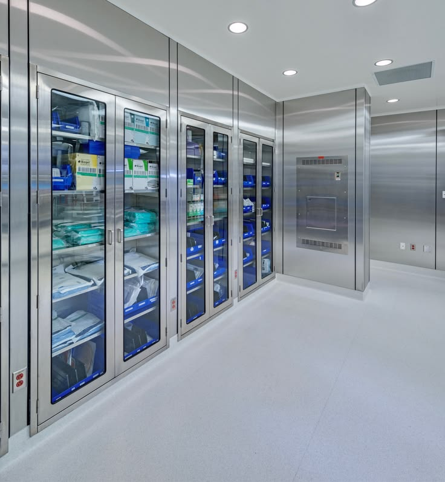
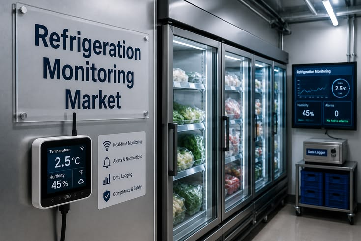
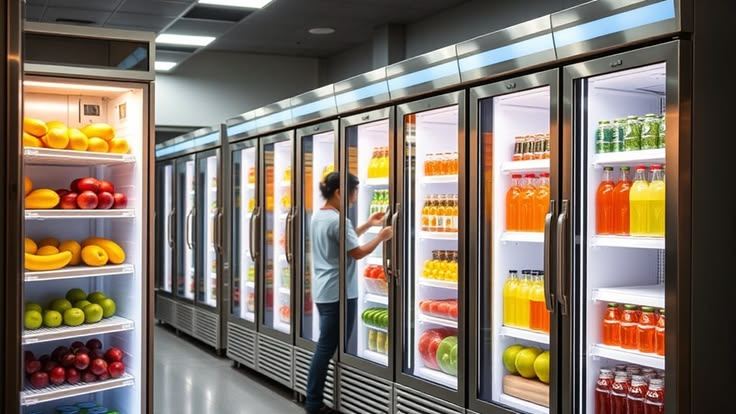
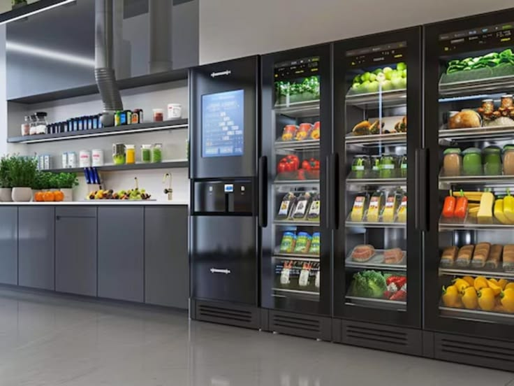
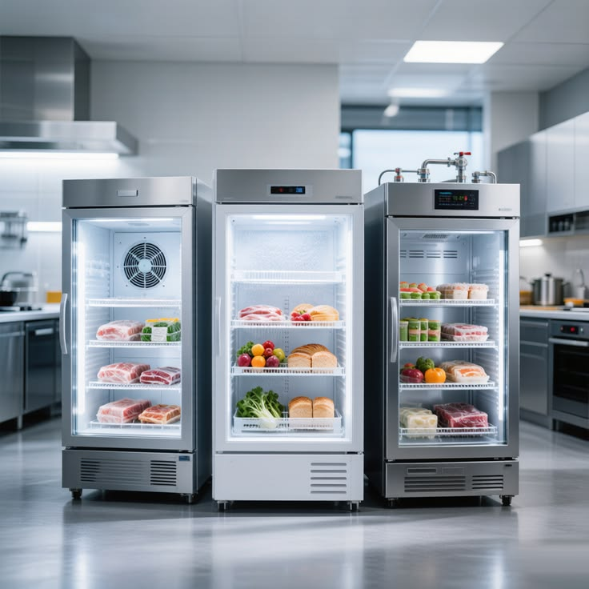

AUDIT TELEMETRY • 21 CFR 11 COMPLIANT
Continuous Temperature Telemetry & Regulatory Compliance
Cryptographically sealed audit trails satisfying FDA, HACCP CCP-1, and EPA Section 608 mandates with zero manual logging.
99.99%
Audit Pass Rate
< 30s
Excursion Dispatch
7 Years
Digital Cold Logs
LIVE TELEMETRY STREAM
Blast Freezer #4
-22.4°C • NOMINAL
Rack-B Suction
182.4 PSI • STABLE
LEDGER HASH:
SHA-256: 8f9b4c2...ec01 (SEALED)
GOVERNMENT & INDUSTRY MANDATES
Certified Regulatory Protocol Frameworks
Fully automated telemetry systems pre-configured to satisfy rigorous federal and international cold chain enforcement.



THE PROBLEM
A 40,000 sq ft regional grocery supermarket in North Hills operated 32 aging display cases and walk-in freezers without continuous temperature telemetry. Manual clipboard logs resulted in missed excursions, inventory risk, and recurring health audit warnings.
WHAT WE DID
We retrofitted the facility with wireless NIST-calibrated IoT probes, integrated sub-second suction pressure telemetry, and configured automated cloud ledger synchronization for every critical zone—all executed overnight with zero store downtime.
THE RESULT
New multi-deck display cases, a centralized digital dashboard, and automated alarm triggers. 100% FDA 21 CFR Part 11 and HACCP compliance logs, instant 30-second inspection dossiers, and zero inventory loss across 36 consecutive months.
CRITICAL TEMPERATURE LIMITS
Multi-Zone Thermal Compliance Architecture
Standardized target ranges and automated excursion fail-safes calibrated by certified master refrigeration engineers.


EXECUTIVE AUDIT CONSULTATION
Guarantee 100% Audit Readiness Across All Facilities
Eliminate citation risks, reduce product spoilage, and automate regulatory reporting with ArcticPro's NIST-traceable telemetry and master refrigeration technicians.
NIST-Calibrated Probes
Zero Violation Guarantee
24/7 Rapid Emergency Dispatch